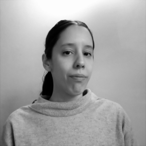

Antonela Copertari es una compositora incipiente y profesora de La Plata, Argentina. Ha estudiado composición musical con María Cecilia Villanueva, Mariano Etkin, Carlos Mastropietro y José Manuel Serrano en la Facultad de Artes, Universidad de La Plata. También ha tomado cursos con los compositores Marcos Franciosi, Nicolás Varchausky y Patricia Martínez. Realizó talleres de composición con Quartetto Maurice (Italia), María Cecilia Villanueva (Argentina), Trio K / D / M (Francia), Miranda Cuckson (Estados Unidos), entre otros. Adicionalmente, ha tomado seminarios de dirección de ensamble de música contemporánea con Fabián Panisello (Argentina) como oyente. Ha recibido encargos del Movimiento Pu Joa, Asunción, Paraguay; Fundación Música AntiquaNova, Bruno Mesz (pianista), AntiquaNova Trío y Ensamble Voxes de Buenos Aires, Argentina. Su música ha sido interpretada por Quartetto Maurice (Italia), Michele Marco Rossi y Carolin Ralser (Italia-Austria), AntiquaNova Trío, Ensamble Voxes, Haydée Schvartz y Elías Gurevich (Argentina) y Ensamble Pu Joa (Paraguay), entre otros. Adicionalmente, ha recibido dos becas del Fondo Nacional de las Artes en 2016 y en 2020. Desde el año 2019 al 2021, Antonela fue colaboradora en la Cátedra de Introducción a la Composición en la Facultad de Artes de La Plata, Argentina. Actualmente imparte clases de composición en forma privada y desde el año 2021 es integrante activa de la Red de Compositoras Latinoamericanas.
